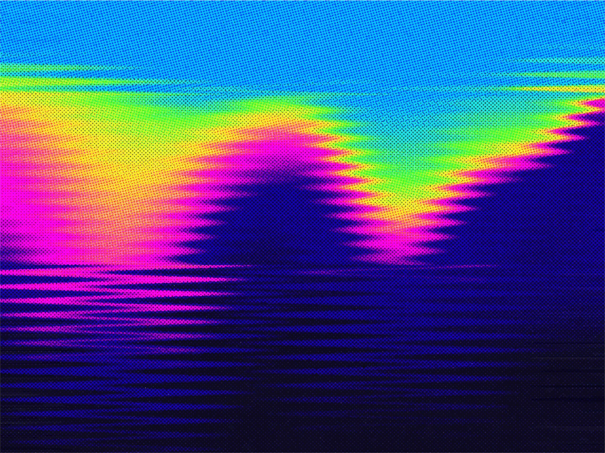

08 The New Stack 게시일 2026.09.28
GPT-6 Sol, 더 싸고 빨랐지만 정확도는 흔들렸다

이 비교는 누가 더 똑똑한지보다, 누가 더 꾸준한지를 본다. 테스트 한 번에서는 두 모델이 비겼다. 하지만 같은 문제를 여러 번 돌리자 차이가 났다. 금융IT처럼 오류 비용이 큰 업무에서는 이 차이가 더 크게 느껴질 수 있다.
핵심 브리핑
이번 비교는 OpenAI의 GPT-6 Sol과 Anthropic의 Claude Opus 5.5를 같은 프롬프트로 5번씩 반복 호출해 본 사례다. 목적은 최고 성능이 아니라, 같은 작업을 반복할 때 결과가 흔들리는지 보는 데 있었다.
테스트는 세 가지였다. 40개의 실패한 CI 작업 로그 분류, 2시간 장애 동안 3,664줄 로그 분석, 가상의 패키지 관리자를 위한 의존성 해석기 구현이다. 두 모델 모두 각사가 제공하는 최고 노력 설정인 max로 호출했다. OpenAI의 AutomationBench 비교는 Sol을 xhigh, Opus 5를 max로 썼지만, 이번 실험은 두 모델 모두 max로 맞췄다.
단발성 결과만 보면 두 모델은 비겼다. 가장 쉬운 CI 분류에서는 둘 다 5회 모두 완벽했다. 그러나 더 어려운 두 테스트에서 차이가 벌어졌다. Opus 5.5는 15회 모두 완벽했다. Sol은 15회 중 12회만 완벽했다.
가격과 속도는 Sol이 앞섰다. 15회 총비용은 Sol이 2.68달러였고, Opus 5.5는 16.72달러였다. Sol은 전체 비용이 약 16% 수준이었다. CI 분류에서는 Sol 비용이 Opus 5.5의 8%였다. 속도도 모든 테스트에서 Sol이 더 빨랐다.
실패 양상도 중요했다. Sol은 어떤 실행에서는 환불 대상 고객 한 명을 빠뜨렸고, 다른 실행에서는 실패한 결제 건수를 28건이 아니라 27건으로 셌다. 의존성 해석기 테스트에서는 78번째 줄에 닫는 괄호 하나를 남겨 모듈 import가 실패했고, 숨은 테스트 120개를 모두 통과하지 못했다.
방법과 결과
이번 평가는 개발자 개인이 수행한 반복 실험이다. 벤더 자체 벤치마크가 아니라는 점은 장점이지만, 표본 수와 과제 수가 제한적이라는 한계도 있다.
의미는 분명하다. 같은 한 번의 시험에서는 우열이 안 보일 수 있다. 하지만 다섯 번 반복하자 Opus 5.5는 전부 맞혔고, Sol은 어려운 과제에서 흔들렸다. 독자 입장에서는 '더 싸다'보다 '틀릴 때 어떤 식으로 틀리나'를 함께 봐야 한다.
가격 면에서는 Sol이 확실히 유리했다. 토큰당 가격도 낮았고, 실제 출력 토큰 수도 적었다. 특히 CI 분류는 OpenAI가 내세운 업무 자동화 주장과 가장 비슷한 과제였는데, 여기서 Sol 비용은 Opus 5.5의 8%였다. 반면 정확도 우위는 반복 실행 기준으로 Opus 5.5 쪽에 있었다.
| 테스트(각 5회) | Opus 5.5 | GPT-6 Sol |
|---|---|---|
| CI 분류 | 5/5 완벽, 1분 27초, 입력 5,447 / 출력 11,127, 0.24달러 | 5/5 완벽, 18초, 입력 3,867 / 출력 1,143, 0.02달러 |
| 장애 로그 | 5/5 완벽, 6분 44초, 입력 152,345 / 출력 53,308, 1.68달러 | 2/5 완벽, 1분 41초, 입력 113,966 / 출력 7,073, 0.30달러 |
| 해석기 명세 | 5/5 완벽, 9분 40초, 입력 2,430 / 출력 70,687, 1.42달러 | 4/5 완벽, 6분 28초, 입력 1,687 / 출력 21,435, 0.22달러 |
| 완벽 실행 수 | 15/15 | 12/15 |
| 총비용(15회) | 16.72달러 | 2.68달러 |
업계의 움직임
이 비교는 한 매체의 직접 실험이지만, 같은 시기 여러 매체와 블로그도 새 모델 가격 경쟁과 성능 차이를 함께 다뤘다. 시장 관심이 '누가 1등인가'에서 '실제 업무에서 얼마에, 얼마나 안정적으로 쓰나'로 옮겨가고 있다는 뜻이다.
공개 본문에는 OpenAI나 Anthropic의 추가 반응은 없다. 다만 OpenAI는 출시 때 Sol이 Opus 5보다 업무 자동화 과제에서 더 높고, 작업당 비용은 9% 수준이라고 주장했다. 이번 비교에서는 최신 Opus 5.5를 넣자 결과가 달라졌다.
시사점과 체크포인트
우리 회사가 모델을 고를 때도 같은 질문이 필요하다. 비용을 줄이는 일이 중요해도, 틀렸을 때 손실이 큰 업무라면 반복 안정성을 먼저 봐야 한다.
- 고객 고지, 정산, 사고 보고처럼 오답 비용이 큰 업무는 더 비싸더라도 일관성이 높은 모델이 나을 수 있다.
- 초안 작성, 티켓 분류, 로그 1차 요약처럼 사람 검토나 테스트가 뒤따르는 업무는 Sol 같은 저비용 모델이 맞을 수 있다.
- 구매 전 평가에서는 단발성 데모보다 반복 실행을 넣는 편이 좋다. 같은 입력을 최소 여러 번 돌려 흔들림을 봐야 한다.
- 모델 평가표에는 평균 점수만 넣지 말고, 실패 유형도 적어야 한다. 숫자 하나를 틀리는지, 문법 오류로 전체가 무너지는지에 따라 통제 방식이 달라진다.
- 이번 실험은 개발자 작업 3종, 각 5회라는 좁은 범위다. 우리 업무 데이터로 재검증하지 않으면 그대로 일반화하기 어렵다.
주요 용어
원문 정보
제목: GPT-6 Sol vs. Claude Opus 5.5: Is cheaper important when results aren’t consistent?
게시일: 2026.09.28